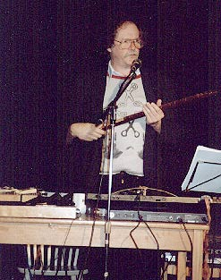
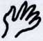

MEMORIES
(To Vali)
And now that your body's pure
wind
blows over my distant horizons,
a perfume of faraway skies
brings back gooseflesh on old bones
remembrance of loves, dews of blood,
rain timeless of joy and bright tears
and songs in the whorls of my ears.
(2006)
WHEN I SAW THE WILD CANYON FROM THE SEA
When I saw the wild canyon from the sea,
like a lost bird flying
over the ever restless waves,
it was the awesome conch shell
of my own heart, open wide
to blue horizons, echoing
with the profound silence
of sirens breathing pure wind.
My heart! A throne of awful cliffs
A Savage of No Man's Land
that cried out deep inside me,
"Oh, fly back to my darkness!"
I yearn for its infinites solitude,
my wings were aflame with desire,
when I saw my wild canyon from the sea.
(2006)
ANIMAL MEMORIES
Once more, like the moon, you have vanished
but I find your scent in the lair
where we've drunk heaven on earth,
timeless animal memories.
Astray in a jungle of perfumes
and deserts after the rain
paradise lost and regained
body and soul as one
wild wedding of pure feelings,
back in the golden age
when beasts and human creatures
had the same dreams.
WE STOLE THE FIRE
Moaning the restless abandon
we wore each other's skins,
we stole the fire from heaven
springs from the underworld
and plumes from the birds of the bush.
THE POETRY TOUR
The lights blinked out in the summer storm
Then Marty Matz at 2 or 3 a.m.
scratching matches
to see his way
crawled down the flights
of lightless stairs
to the bar in the hotel
at Vallambrosa
in the hills above Florence
to find a bottle of cognac
& a candelabra too!
which he lit and walked
cognac in one 
lit candles in the other
back up the stairs
to his room
2/9/08 About a poetry tour through Italia summer 2000
LOVE POEM TO THE VALLEY
Yes, I'm jealous of you, my giant woman
my great Queen by the Sea, shy of the sun
so wildly deep in your shadowy veils.
In your heart full of brambles, like a beast
I found my burrow, in your arms I've spent
wrapped in the tangled long hair of your forest
half of my life, but you, You're beyond time.
I drink the purest wind when I bow down
your breasts to kiss, transparent as rock crystal,
sheer falls of velvet moss dripping with diamonds.
All words grow pale when you sing in my veins.
Black ravens fly as you open your lashes
looking at me with huge abyssal eyes.
You're dark at dawn and when the sun goes down
your marred cheeks blush with blood of fiery gold.
Embrace me in the night of your high cliffs!
Having known you, my beautiful wild woman,
I found my soul and lost the world to come.
(1990)